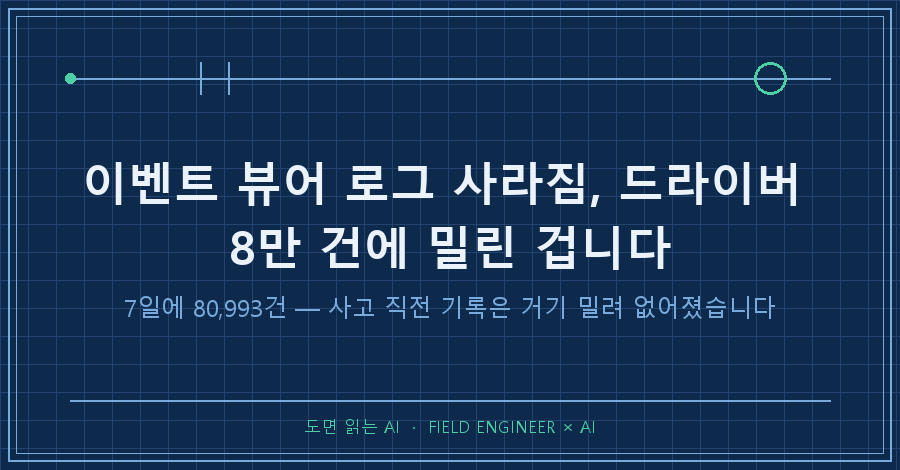
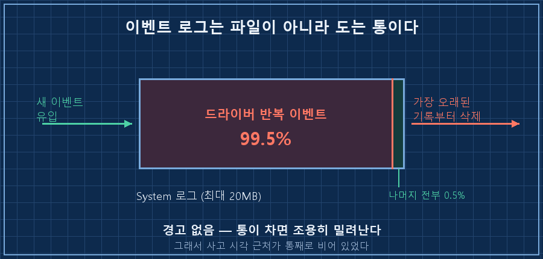
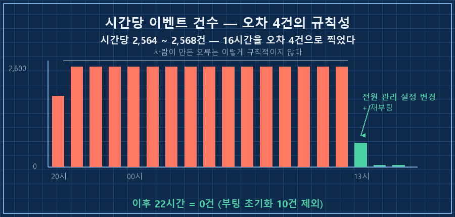
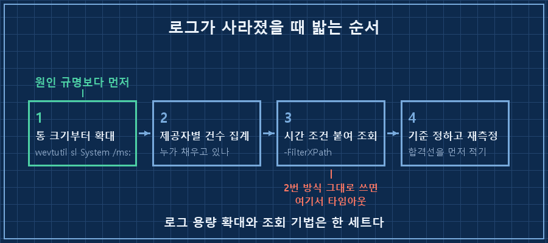

강제로 전원 버튼을 눌러 끈 노트북이 왜 멎었는지 보려고 이벤트 뷰어를 열었습니다. 그런데 그 시각 근처가 통째로 비어 있었어요.
먼저 답부터 적을게요. 윈도우 이벤트 로그는 파일이 아니라 정해진 크기만큼만 도는 통입니다. 누가 로그를 대량으로 쏟아부으면 오래된 기록부터 순서대로 밀려 나가요. 이벤트 뷰어 로그 사라짐 증상의 대부분은 삭제도 버그도 아니고 이 덮어쓰기입니다. 제 경우엔 드라이버 하나가 7일 동안 80,993건을 찍었고, 그게 System 로그의 99.5%였습니다.
2026년 9월 기준 윈도우 10이고, 확인부터 조치까지 전부 윈도우 기본 도구(이벤트 뷰어·wevtutil·PowerShell)로 됩니다. 관리자 권한만 있으면 되고 따로 설치할 건 없어요.
제 일은 설비가 남긴 기록을 뒤져서 왜 멈췄는지 알아내는 쪽에 가깝습니다. 15년쯤 했는데, 그래서 "기록이 없다"는 말이 제일 무섭습니다. 이번엔 그게 제 노트북에서 났어요.
1. 로그는 파일이 아니라 통입니다
이벤트 로그마다 최대 크기가 정해져 있고, 기본값은 대개 20MB예요. 이 통이 차면 윈도우는 경고를 띄우지 않습니다. 그냥 가장 오래된 기록부터 조용히 버리고 새 기록을 받아요.

그러니까 로그를 잡아먹는 놈이 하나 있으면, 그놈이 다른 모든 기록의 수명을 정하게 됩니다. 20MB짜리 통에 시간당 2,500건씩 들이붓고 있었으니 통이 한 바퀴 도는 데 하루도 안 걸렸어요.
내 PC의 통 크기는 이 한 줄로 나옵니다.
Get-WinEvent -ListLog System | Select-Object MaximumSizeInBytes, RecordCount, FileSize2. 누가 통을 채우는지부터 세세요
증상을 보자마자 저는 AI한테 "크래시 직전 로그가 왜 없는지 봐달라"고 시켰어요. AI가 제일 먼저 한 건 원인 추측이 아니라 제공자별로 건수를 세는 일이었습니다. 이게 순서가 맞았어요.
$since = (Get-Date).AddDays(-2).ToUniversalTime().ToString("yyyy-MM-ddTHH:mm:ss.000Z")
$e = Get-WinEvent -LogName System -FilterXPath "*[System[TimeCreated[@SystemTime>='$since']]]"
$e | Group-Object ProviderName | Sort-Object Count -Descending | Select-Object -First 5 Count, Name돌리면 이렇게 나옵니다. 실제 제 결과예요.
Count Name
----- ----
43830 nhi
128 Microsoft-Windows-Smartcard-Server
124 Microsoft-Windows-DistributedCOM
99 Microsoft-Windows-FilterManager
80 Microsoft-Windows-Kernel-Processor-Power1등과 2등의 차이가 340배입니다. 이렇게 나오면 볼 것도 없어요! 시간대별로 쪼개보니 더 기가 막혔습니다. 시간당 2,564건에서 2,568건. 열여섯 시간을 오차 4건 안쪽으로 찍고 있었어요. 사람이 만든 오류는 이렇게 규칙적이지 않습니다. 1.4초에 한 번씩, 장치 하나가 잠들었다 깨는 걸 무한 반복하고 있었던 거죠.

여기서 갈림길이 있었어요. 저는 그 장치를 노트북에 꽂아 쓴 적이 없었고, AI는 "펌웨어를 갱신하자, 장치관리자에서 절전 허용을 끄자"는 조치안을 만들어 왔습니다. 그때 제가 한마디 했어요. "나 그거 안 쓰는데. 전원 어댑터가 USB-C인 건 맞아."
그 한마디가 답이었습니다. 요즘 노트북의 USB-C 충전 포트가 곧 그 장치의 포트라서, 어댑터만 꽂아도 컨트롤러가 계속 포트를 관리하거든요. 안 쓰는 게 아니라 매일 쓰고 있었던 거예요.. 기계 로그는 결과만 남기고 의도를 안 남깁니다. 이건 세어서 알아낼 수 있는 게 아니었어요.
3. 이벤트 뷰어 로그 사라짐을 막는 순서
원인을 못 고치더라도 증거부터 보존하는 게 먼저입니다. 통을 키워두지 않으면 다음 사고 때도 똑같이 기록이 없어요.
# 관리자 권한 PowerShell — System 로그를 256MB로 확대
wevtutil sl System /ms:268435456
# 원복하려면
wevtutil sl System /ms:20971520확인은 1번 조회를 다시 돌려 MaximumSizeInBytes가 268435456으로 바뀌었는지만 보면 됩니다. 제 노트북은 지금 이래요.
MaximumSizeInBytes : 268435456
RecordCount : 82007
FileSize : 220897288만 건이 쌓였는데 파일은 22MB입니다. 20MB 기본값이었으면 앞부분이 벌써 잘려나갔을 숫자예요. 늘려둔 덕에 폭주 기간이 통째로 남았고, 그래서 이 글의 수치를 뒤늦게라도 셀 수 있었습니다.

4. 통을 키웠더니 조회가 멈췄습니다
이게 제일 아까운 삽질이었어요. 통을 키운 다음, 조치가 먹혔는지 보려고 평소 쓰던 조회를 그대로 돌렸습니다.
# 이렇게 하면 안 됩니다 — 2분 타임아웃
Get-WinEvent -FilterHashtable @{LogName='System'; ProviderName='nhi'}2분을 기다리다 실패했습니다. 시간 조건이 없는 조회는 로그 전체를 처음부터 훑거든요. 20MB일 땐 순식간이던 게 256MB가 되니 못 견딘 겁니다. 증거를 살리려고 통을 키웠더니 그 통을 못 들여다보게 된 거죠..
해법은 시간 조건을 조회식 안에 박아 넣는 겁니다. 바깥에서 걸러내면 늦어요.
$since = (Get-Date).AddMinutes(-15).ToUniversalTime().ToString("yyyy-MM-ddTHH:mm:ss.000Z")
Get-WinEvent -LogName System -FilterXPath "*[System[Provider[@Name='nhi'] and TimeCreated[@SystemTime>='$since']]]"로그 용량 확대와 조회 기법은 한 세트로 기억해야 합니다. 하나만 하면 반드시 다른 하나에서 걸려요. 혹시 이벤트 뷰어가 갑자기 느려졌다면, 용량을 늘린 적이 없는지부터 떠올려보시겠어요?
5. 고쳐졌다는 판정도 기준이 먼저였어요
전원 관리 설정을 하나 바꾸고 재부팅한 뒤에 다시 셌습니다. 이때 순서를 하나 지켰어요. 측정하기 전에 합격선을 먼저 적어놨습니다. 분당 0.1건 미만이면 해소, 1건 이상이면 미해결로요.
결과는 52분 동안 12건이었는데, 여기서 한 번 더 걸러야 했습니다. 12건 중 8건이 부팅 직후 1분 안에 몰린 초기화 이벤트였거든요. 그건 정상 동작이라 빼야 정직한 숫자가 됩니다.
| 구간 | 건수 | 시간 | 분당 |
|---|---|---|---|
| 문제 발생 기간 | 80,993 | 7일 | 8.0 |
| 재부팅 후 전체 | 12 | 52.4분 | 0.229 |
| 재부팅 후(초기화 제외) | 4 | 51.1분 | 0.078 |
100배가 줄었습니다. 다만 52분은 관측 창이 짧아서, 저는 이걸 잠정 판정으로만 두고 하루를 더 기다렸어요. 오늘 다시 세어보니 마지막 부팅 이후 22시간 동안 10건이고, 그 10건도 전부 부팅 후 22초 안에 찍힌 초기화분이었습니다. 이후로는 0건. 예전 속도대로면 그 22시간에 1만 건이 쌓였어야 하는 자리예요.
하나 솔직하게 남겨둘 게 있습니다. 왜 멎었는지의 인과는 아직 추정입니다. 폭주가 시작되기 전 로그가 이미 밀려 없어져서 전후를 직접 대조할 수가 없거든요. 증거를 잃어버린 대가를 마지막에 이렇게 치릅니다.
이건 물어보실 것 같아요
Q. 로그가 사라진 게 아니라 누가 지운 걸 수도 있지 않나요?
지우면 흔적이 남습니다. 이벤트 ID 104(로그 지움)를 찾아보세요. 그게 없는데 오래된 기록만 없다면 덮어쓰기 쪽입니다. 지운 것과 밀린 것은 구분이 되고, 구분해야 다음 조치가 달라져요.
Q. 그냥 로그 크기를 1GB쯤으로 크게 잡아두면 편하지 않나요?
조회가 그만큼 느려집니다. 4번에서 겪은 게 그거예요. 통을 키우는 건 원인을 잡을 때까지 증거를 살려두는 임시 조치지, 해결이 아닙니다. 결국은 노이즈를 내는 놈을 찾아 멈춰야 해요.
Q. AI한테 시키면 이 과정을 알아서 해주나요?
집계와 명령 작성은 확실히 빠릅니다. 대신 사람이 필요한 자리가 두 군데 있었어요. 조회가 타임아웃 났을 때 그걸 용량 변경과 연결하는 것, 그리고 "그 장치 안 쓰는데 전원선이 USB-C다"라는 사실을 던져주는 것. AI가 준비한 펌웨어 갱신안은 실측 앞에서 통째로 폐기됐습니다.
빈 이벤트 뷰어를 보고 처음 한 생각은 "로그가 깨졌나"였어요. 안 깨졌습니다. 성실하게 돌아가고 있었고, 다만 제가 안 보는 사이 쓸모없는 기록으로 꽉 차 있었을 뿐이에요. 그래서 이제는 뭘 파든 로그 통부터 키워놓고 시작합니다. 다음 편에서는 켜둔 자동화가 지금 살아 있는지를 로그 없이 판정하려다 헛다리를 짚은 얘기를 해볼게요.
혹시 비슷한 걸 파고 계시면 makefield.ai에 같은 계열 진단 기록이 몇 건 더 있습니다.
태그: #이벤트뷰어로그사라짐 #윈도우이벤트로그 #이벤트로그용량늘리기 #이벤트로그덮어쓰기 #System로그확인 #wevtutil #PowerShell로그조회 #GetWinEvent #윈도우진단 #PC강제종료원인 #드라이버오류로그 #노트북먹통 #AI로PC점검 #AI에게일시키기 #도면읽는AI